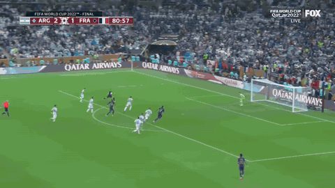
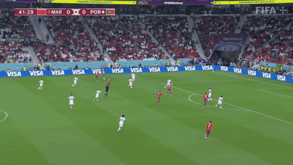
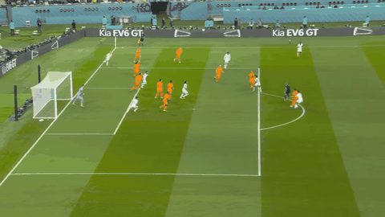

Chemistry → Winning
Dense chemistry wins tournaments — and it doesn't look the same for every team. Argentina won with a nucleus. France ran a network. Morocco built a wall. Croatia powered an engine. AW-JOI and AW-JDI see all four shapes. Event-only frameworks see none of the off-ball mechanics that distinguish them.
Chemistry density vs WC22 finish
Team Chemistry Density (TCD) is the count of same-squad pairs with attention-weighted JOI per 90 above the threshold — the number of dense, repeatable connections inside the team. The leaderboards are on Chemistry Leaderboard; the regression test is here.
TCD vs tournament finish (ρ = +0.704, n = 31, p < 0.001)
Each dot = one WC22 team. X = TCD. Y = stage reached (Group → Winner). Gold ring = WC22 semifinalist.
Correlation summary — chemistry beats raw talent
Spearman rank correlations against the 31 WC22 sides. TCD is the strongest predictor we found.
| Hypothesis | Spearman ρ | p | n | Reading |
|---|---|---|---|---|
| TCD → tournament finish | +0.704 | < 0.001 | 31 | Top 4 by TCD = the 4 semifinalists. France #1, Brazil #2, Croatia #3, Morocco #4. |
| FIFA 23 Overall → tournament finish | +0.548 | 0.002 | 30 | EA's published talent index does predict finish — but worse than TCD. |
| Mean AW-JOI90 (all pairs) → tournament finish | +0.45 | 0.011 | 31 | Per-pair intensity matters less than network breadth. |
| FIFA 23 Overall → TCD | +0.51 | 0.004 | 30 | Top-rated nations also build denser chemistry — their players concentrate at elite clubs. |
The four semifinalists were the four densest networks in the tournament. Below: each one looked completely different. The next four sub-sections walk through them in TCD-rank order: Argentina (rank 7, nucleus), France (rank 1, network), Morocco (rank 4, wall), Croatia (rank 3, engine).
Watch chemistry happen, frame by frame
Each case study below ends with one embedded play. Two specialist models run per frame — a P(score next 10s) specialist and a P(concede next 10s) specialist — together with an attention vector over the 22 players. Scrub through and watch chemistry happen: defenders pulled out of shape, off-ball runs that move the probability before any touch, attention transferring along a chain. Each clip below has its own controls bar so you can compare settings side-by-side without scrolling.
Argentina — the nucleus (TCD rank 7)
Argentina look mid-pack on TCD because broad TCD undersells what one player can be. Argentina's chemistry isn't distributed across the squad — it's concentrated around Messi. Every strong pair in Argentina's network runs through him, even on possessions where he never touches the ball. The atom metaphor from the landing page visually pays off here: one central nucleus, every orbital edge connecting back to it.
Messi's orbital network
Spokes from Messi to every strong same-squad partner. Line thickness ∝ AW-JOI90; shorter orbit = stronger pair. Goalkeeper excluded so the player-to-player structure is visible. Top spokes: Acuña (0.77), Álvarez (0.74), Tagliafico (0.69), Molina (0.68), Mac Allister (0.65), Di María (0.63), Romero (0.61).

What the interactive play below shows — this is the nucleus story. The model's attention collapses onto Álvarez alone and stays there frame after frame — there is no "network" here. Argentina won by sending one carrier through and trusting him to finish.
Why this clip: Álvarez carries the ball, but Messi never holds it — and the model's attention still keeps orbiting him. That's the gravity TCD's breadth-based score doesn't see.
France — the network (TCD rank 1)
France ran the deepest, most distributed chemistry of the tournament. They didn't depend on one player. The visible top edge by AW-JOI in the squad we have on record is Mbappé + Hernandez (1.16) — not Mbappé + Griezmann. Mbappé + Dembélé and Tchouaméni + Rabiot sit in the top tier, with strong cross-team pairs anchoring the midfield-to-attack flow. Where Argentina is a star with orbitals, France is a graph — edges spread across the squad with no single hub.
France's distributed network
Pitch-positioned pair graph (GKs excluded). Orange = off↔off, blue = def↔def, purple = cross. Notice how the strong edges don't all meet at one node — the network is broad.

What the interactive play below shows — the model reads this as a network moment: the cross-team pair edges spread across multiple France attackers in the box, not concentrated on one carrier. France's chemistry is the web; Argentina's was the nucleus around Messi — same tournament, two opposite winning shapes.
Why this clip: France break in transition and the model's attention snaps across the squad — Mbappé, Hernández, Dembélé all light up before the ball leaves Mbappé's foot. The shape is the chemistry.
Morocco — the wall (TCD rank 4 overall · tcd_def rank 3)
Morocco made the semi-final on defense, not offense. Their TCD doesn't come from the off-off block — it comes from the def-def block, where they rank #3 in the tournament. The Saiss / Aguerd / El Yamiq / Hakimi / Mazraoui line repeatedly attended to each other for the kind of synchronized pressure and cover that defines a wall.
This is where we see what nobody else saw. The published academic analysis of Morocco's run (summary here) was event-based. The authors quote their own limitation:
"The match event data only describes the actions that actually happened in the match but not the actions that players prevented from happening, for instance, by smart runs or clever positioning."
That is exactly the off-ball pinning that defined Morocco's tournament — and exactly what AW-JDI sees directly. Their paper couldn't measure it. Ours does. The blue lattice below is the part of Morocco's chemistry that event-only frameworks are structurally blind to.
Morocco's defensive lattice
Pitch-positioned network with def↔def edges in full opacity, all other edges muted. The cluster on the left side of the pitch is the wall. Hover any edge for AW-JOI90 / AW-JDI90.

What the interactive play below shows — while the ball is travelling down the left side, the cross-team pair-attention edges from Boufal · Ounahi · Attiat-Allah concentrate on Dias and Pepe, pulling the centre-backs to the ball-side and clearing the central lane for the header. The build-up is the chemistry; the cross is what the lane was opened for.
Open-play header that out-leaped Portugal's back line and Diogo Costa.
Build-up reads like this in the model: Morocco swing it
Ziyech → Boufal → Ounahi
→ Attiat-Allah, and at the moment of the
cross from the left
En-Nesyri's halo lights up — he's pinned between Dias and Pepe,
so the cross-team attention rings the centre-back line, not the ball.
Then the cross arrives and the header goes in.
The defensive lattice above explains the tournament; the clip below
shows Morocco when the attention engine was theirs — the half of
Morocco's tournament the published event-based analysis couldn't measure.
Croatia — the engine (TCD rank 3)
Croatia's TCD comes from a midfield-centric off-off subgraph — the Modrić / Brozović / Kovačić triangle drove their tournament. When the model's attention orbits Croatia, it orbits the middle third; the wide players (Perišić, Juranović) hook into it, but the engine room is where the chemistry lives.
Croatia's midfield engine
Pitch-positioned network with the Modrić / Brozović / Kovačić triangle highlighted in gold; non-engine edges muted. Note how every other strong edge in the squad funnels through this trio.

What the interactive play below shows — this is the engine shape. Watch the same-team pair edges keep cycling through the Modrić · Brozović · Kovačić triangle in the middle third while the cross is set up. The chemistry lives in the rotation, not in any one player.
Croatia's R16 equalizer against Japan. The Modrić / Brozović / Kovačić triangle owns the buildup — attention orbits the middle third for most of the sequence, then snaps wide for the cross. The midfield engine in motion, not a single passing combination.
Appendix — more interactive plays
Each play below is one frame-by-frame illustration of chemistry on a single goal. The global controls above (chart, top-attended, attention source, etc.) apply to all of them.
Memphis 10' (Netherlands v USA, R16)
Netherlands' opener at the end of a 20-pass Dutch sequence. Watch attention chain along the build-up — this is chemistry as a continuous attention transfer, not a single decisive pass.

What the interactive play below shows — the cross-team attention hands off down the chain pass by pass — the chemistry edge that lives in pure tracking, even though no single pair carries it.
Doan 48' (Japan v Spain, group stage)
Japan's press-and-recover equaliser that knocked Spain off the top of the group. P(concede) for Spain climbs in the seconds before any touch — their defensive shape is breaking before the on-ball event lands.

What the interactive play below shows — P(concede) for Spain climbs in the seconds before any touch — that's Japan's defensive shape collapsing on the ball-carrier, not a Japanese on-ball action. The tracking model sees the press as a structural event.
Di María 36' (Argentina v France, final)
Argentina's third goal from Tagliafico's interception. The attention chains through Mac Allister to Messi to Di María; P(score) climbs as the defence is spread, before any pass on the goal is made.

What the interactive play below shows — attention chains through the carry sequence pass-by-pass. The decisive off-ball spreading happens before any pass that registers as a key event — the model picks up the geometry that event data misses.
Janssen 4' blocked — near-miss (Senegal v Netherlands, group stage)
A near-miss: Netherlands work the ball into Senegal's box and the model's P(score) climbs above 0.9 before Janssen's shot is blocked and the probability collapses. P(score) is a probability, not a binary — here the model picks up chemistry on a sequence that didn't end in a goal.
Turnover thrash 78' — bad chemistry (Argentina v Australia, R16)
What a breakdown looks like in the model. Net (Pscore − Pconcede) flips between +0.9 and −0.9 four times across 27 s as possession ping-pongs through the midfield. High net is fragile when teams keep giving the ball back — the inverse of the clean attention transfers above.
Method & sources
TCD (Team Chemistry Density) is the count of same-squad pairs with attention-weighted JOI per 90 above the strong-pair threshold — the same metric and threshold used on the Chemistry Leaderboard. tcd_def is the subset of TCD where both players are defenders (CB/LB/RB/LWB/RWB/GK). AW-JOI itself is the per-frame product of the two players' ball-attention multiplied by max(ΔPscore, 0), accumulated across the tournament. See methodology §attention for the full pipeline.
Tournament result rank: winner=1, RU=2, 3rd=3, 4th=4, QF losers ranked 5–8 by group-stage points, R16 losers 9–16, group-stage exits 17–32 by points then goal diff. Standard FIFA tournament ranking.
Interactive plays: frame-by-frame inference from the Frame-VAEP transformer. We run two separate specialist models per frame — one for P(score next 10s), one for P(concede next 10s). The attention source toggle picks between the score specialist (single-head, attention biased toward attackers/receivers) and the shared two-head model.
Bottom line. Chemistry wins. Argentina (nucleus), France (network), Morocco (wall), Croatia (engine) all built different shapes, and AW-JOI + AW-JDI sees every one of them — including the defensive pinning that the published Morocco paper explicitly says event data cannot measure. That gap is the value of frame-level chemistry.